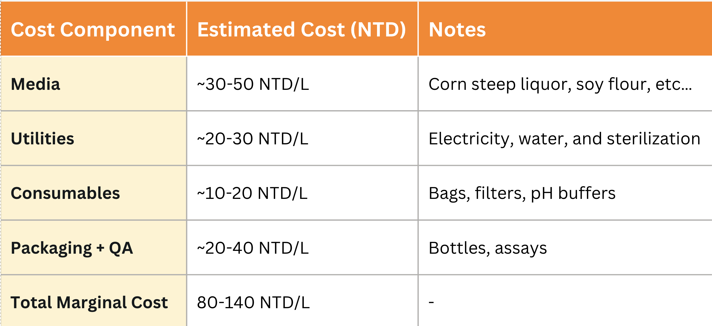
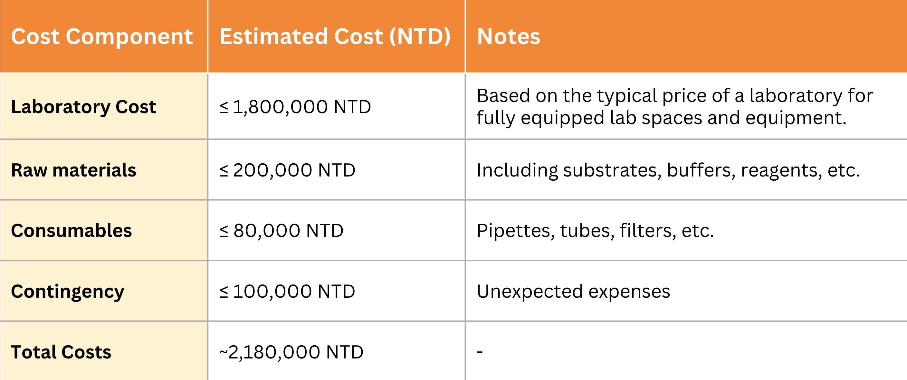
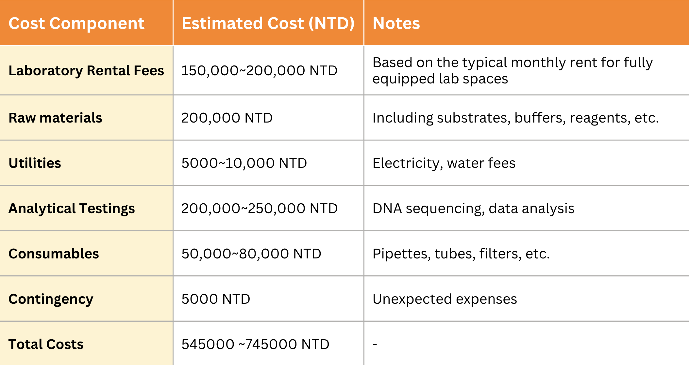

Total Cost Estimate
In this initiative, we aim to produce and distribute a cost-effective, fiber-degrading enzyme
enhanced by YebF secretion technology. To achieve scalability and impact, we assume
responsibility for laboratory setup, essential equipment, and ongoing operational support. The
costs outlined below reflect both fixed and variable expenses for producing the enzyme at scale
as a pretreatment solution in food waste management systems, particularly in BSFL-based
processing facilities. These estimates are based on Taiwan’s laboratory market prices and
designed to support the enzyme’s application in industrial and municipal food waste recycling
systems.
Recurring Operational Costs (Variable Costs)
Once production begins, the marginal cost of producing one liter of secreted enzyme supernatant
ranges from 80–140 NTD/L, with the largest cost components being culture media (30–50 NTD/L) and
packaging/QA (20–40 NTD/L). These costs are competitive when compared to traditional enzymatic
solutions, due to the reduction in purification steps and use of cost-efficient media. This
recurring operational structure ensures we can achieve scalability without significant increases
in unit cost.
Taiwan vs. Global Waste Management Market (2023-2030)

Fixed Costs (One-Time and Annual)
The fixed cost of setting up the project is estimated at 2,180,000 NTD. This includes one-time
investments in laboratory rental fees and analytical tools like DNA sequencing, as well as
recurring costs such as water, electricity, and consumables.
Fixed Costs:

This graph provides a realistic path toward commercialization, showing that our technology is not only scientifically sound, but also financially feasible.
Financial Projections
Start-up Costs (Fixed, One-Time):

Revenue Forecasts
Initial Annual Sales Volume:
We assume LarVase would achieve an annual sales volume of 50,000 Liters by the end of its first full year of operation (Year 1). Based on our marginal analysis, 50,000 Liters would generate a total revenue of approximately 150,000,000NTD.
Average Annual Growth Rate:
The annual growth rate of 7.0% assumes consistent growth over the 10-year forecast period. This growth rate is a blended estimate of the CAGRs for the relevant markets (organic waste recycling, enzymes, Taiwan waste management, and environmental biotechnology).
Pricing Consistency:
For long-term revenue projections, we assume that the price per liter will fluctuate, however, total revenue growth will be captured by growth in the size of the market and LarVase's ability to gain further market share.
Break-even Analysis
We project an initial annual sales volume of 50,000 Liters, yielding ~150,000,000 NTD in revenue
by the end of Year 1. Given our total marginal cost per liter (80–140 NTD) and estimated market
price per liter of 3,810 NTD, this suggests strong profitability potential. We anticipate a 7%
average annual growth rate, aligned with the Compound Annual Growth Rates (CAGRs) for the
enzyme, organics recycling, and Taiwanese waste management sectors.
Break−even Point = Fixed Cost ÷ (Price Per Unit − Marginal Cost Per Unit) = 2,180,000 ÷ (3180 -
140) ≈ 572.18 Liters
Scalability & Societal Impact
LarVase is more than just a product—it’s a movement toward smarter, faster, and greener food waste management. By combining synthetic biology, environmental biotechnology, and innovative business modeling, we offer a scalable, enzyme-based solution to a global crisis where food waste contributes up to 10% of greenhouse gas emissions. Our enzyme supernatant accelerates fiber breakdown—filling a critical gap in Taiwan’s BSFL systems, which currently struggle with cellulose-rich waste. By enabling faster, more complete decomposition, LarVase reduces methane emissions, cuts landfill loads, and supports a high-recycling, low-waste future. Additionally, through increasing the protein yield of black soldier fly larvae, our solution feeds into a more sustainable livestock feed chain—less reliant on land-intensive crops like soy. Our clear market differentiation, strong financials, and forward-thinking subscription model position LarVase as a pioneering force in the circular economy.